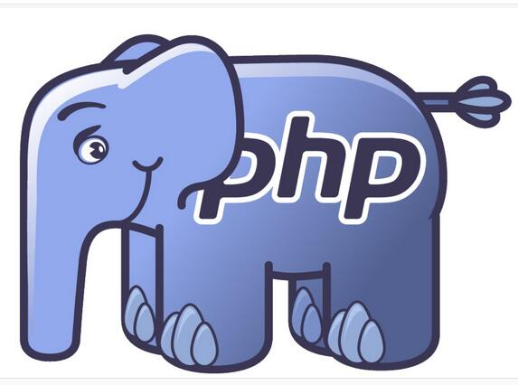

-
黑客破解网络密码的10种方法

1.破解网络密码—暴力穷举
密码破解技术中最基本的就是暴力破解，也叫密码穷举。如果黑客事先知道了账户号码，如邮件帐号、QQ用户帐号、网上银行账号等，而用户的密码又设置的十分简单，比如用简单的数字组合，黑客使用暴力破解工具很快就可以破解出密码来。因此用户要尽量将密码设置的复杂一些。 -
windows下php运行环境配置方法
-

一 准备 1 下载apache http://httpd.apache.org/download.cgi#apache24 httpd-2.2.22-win32-x86-openssl-0.9.8t.msi openssl表示带有openssl模块，利用openssl可给Apache配置SSL安全链接
2 下载php http://windows.php.net/downloa....